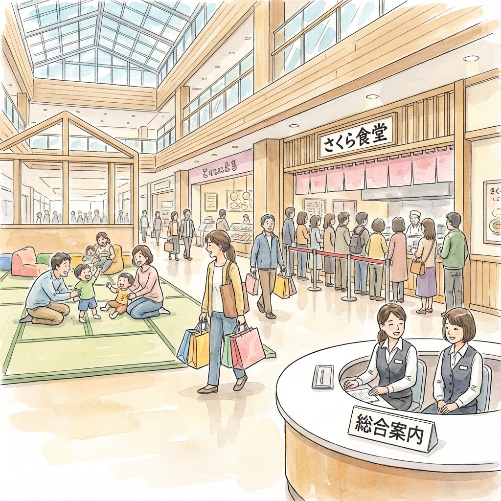
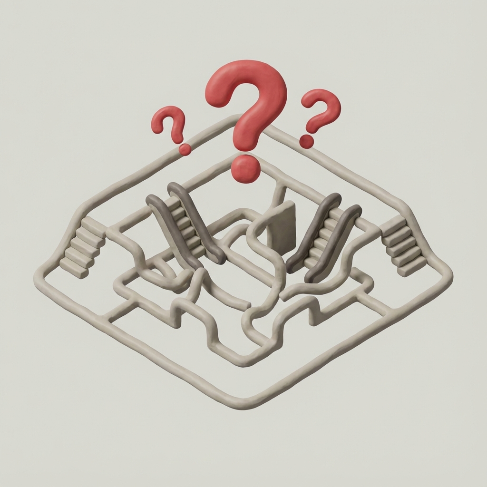
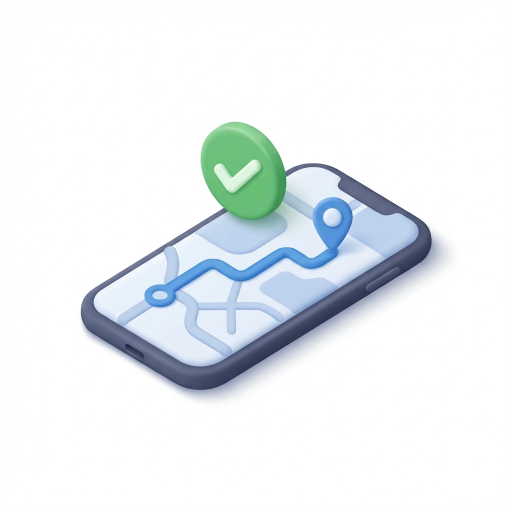
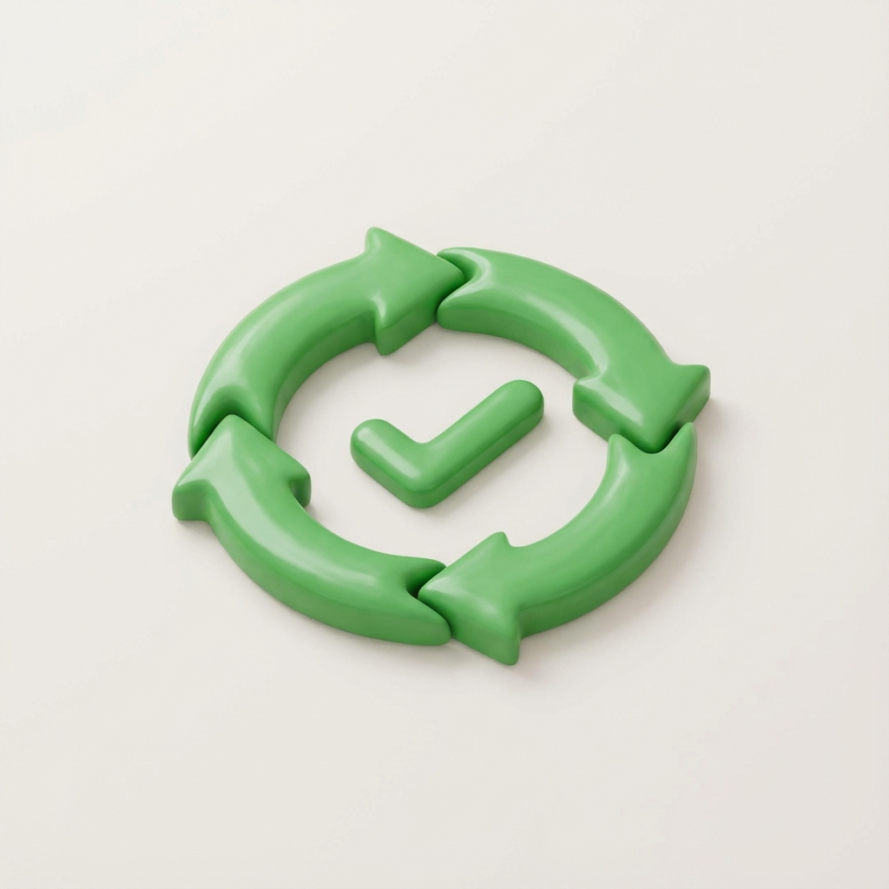
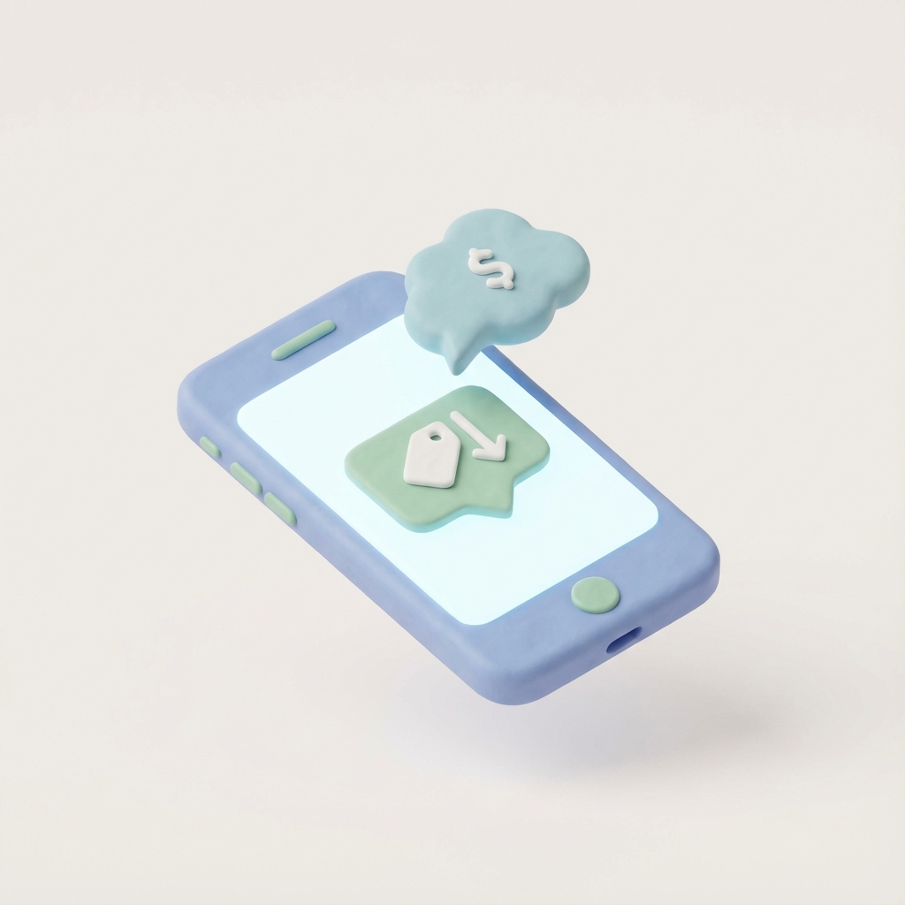
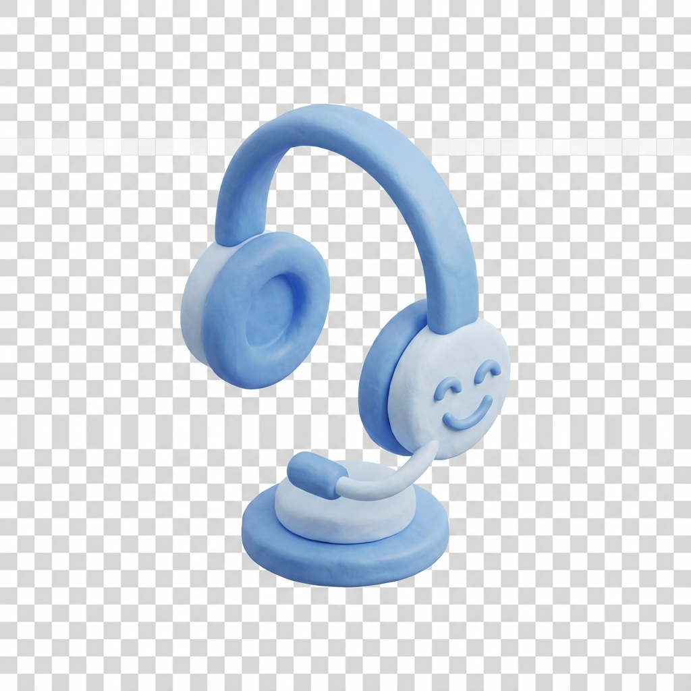
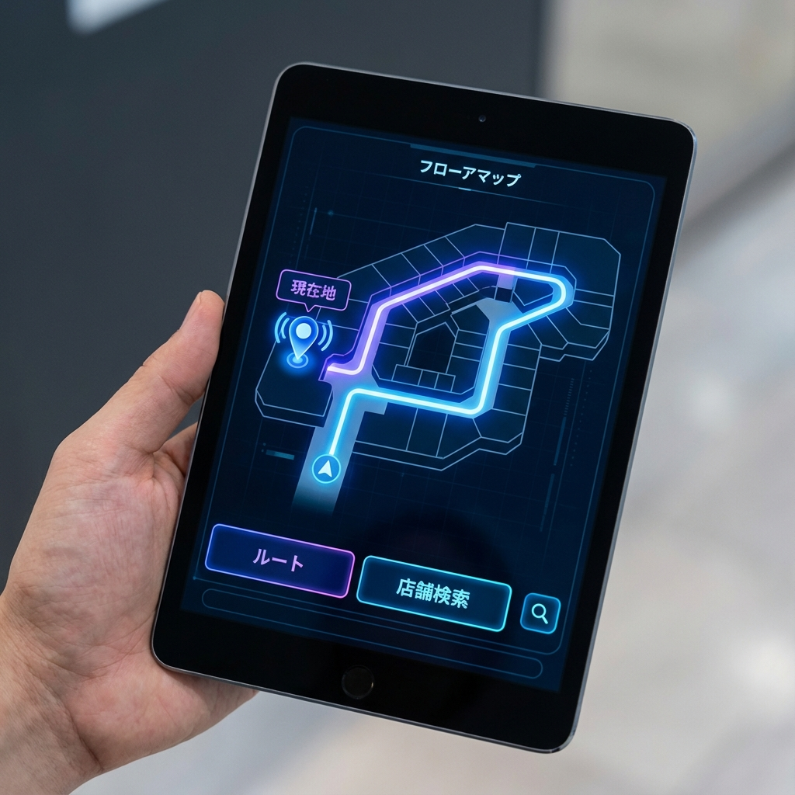

フロアマップが、
そのままAIコンシェルジュに。
画像をアップロードするだけ。既存の案内図が、多言語対応のインタラクティブなナビゲーションシステムに生まれ変わります。

画像をアップロードするだけ。既存の案内図が、多言語対応のインタラクティブなナビゲーションシステムに生まれ変わります。
現場が抱える具体的な課題と、GBaseが提供する解決策。

単純な場所案内がインフォメーション業務の40%以上を占有。

"Metamap"等のマップシステムと連携し、ルートを直接描画。
手動更新が追いつかず、「終わったセールが表示される」クレームが多発。

WebサイトやCMSから最新情報を自動で認識・更新。
独自アプリには数千万円が必要だが、肝心のダウンロード数は伸び悩む。

国内9,600万人が使うLINEアプリをそのままインターフェースに。
「AIが間違ったことを言ったら？」「たらい回しにされる？」という懸念。

解決できない場合は、即座にLINE WORKSや電話で人間に通知。
GBase Supportは、あなたの施設のレイアウトを視覚的に理解します。「トイレはどこ？」と聞かれれば、実際のフロアマップ上にルートを光らせて案内します。

親しみやすい3Dアバターが、24時間365日疲れを知らずにお客様をお出迎えします。音声認識対応で、手荷物がいっぱいのお客様もスムーズに利用可能です。